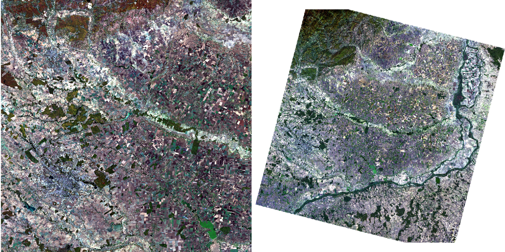
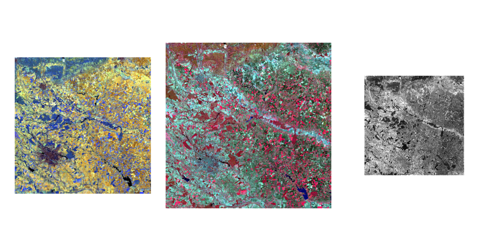

Introducing Remote Sensing - A Bucharest Analysis
For my first entry to this Learning diary, I chose to present my hometown of Bucharest! I believe this example to be particularly relevant as the city shows a complex structural transformation following implementation of strict socialist urban policy, paired with intensive real-estate development following the Christmas Revolution in 1989 ( Nistor et al. (2021) ) .
We use the most up-to-date Sentinel and Landsat imagery that we download from Copernicus Open Access Hub and Earth Explorer respectively! This working of this first week were not without hiccups, but provides an introduction to SNAP and satellite imagery processing in Rstudio with my thoughts along the way.
Basic Raster image processing and statistics
Our images presented below, were collected on the 27th and 17th of October 2022 for Sentinel and Landsat respectively. They are both true color images (TCI) with the Red, Green and Blue bands present.

We have a more recent view available of the Landsat imagery (24th of October) but prefer not to use it as more impurities are present. We will tackle this in future Diary entries with the introduction of atmospheric correction.
We continue to explore our data by looking at the different colour composites in the sentinel images:

Is it interesting to try and understand what the colours mean in these images. For example, the middle image, False Colour Composite (using bands B8, B4 and B3) aims to show the physiography of the terrain showing soil and land-resources which has been common practice since the 20th century (Reddy et al. (1990)). As our study area is primarily urban (Bucharest located in the bottom-left corner), we see that many of the red colours bands are absorbed, signifying a lack of vegetation in the Capital, compared to rural areas on the right side of the image.
The same is true for the left image, the atmospheric penetration, where we recognise distinct urban areas due to the purple/gray cyan colours in the bottom-left corner. Finally, the right side image provides a raw overview of the sentinel imagery, and specifically the B1 band. the B1 band is used for the Coastal and Aerosol information, with a detailed description of Bands available here!
Understanding the differences between S-2 and L-8
Now that we have images from both sources, we proceed to re-sample the images to the same resolution. Below we have a comparison of the bands between Sentinel-2 and Landsat-8.
Yet this is not enough as in order to make cross-platform comparisons successful! Below we have a detailed overview comparing band resolution between Sentinel and Landsat, with respective links to sources of Table 1 (left) and Table 2 (right)!
We see that the two platforms share certain similar characteristics, but differences are notable. For example, even if the Blue, Green and Red Channels are present on both, their wavelengths do not overlap perfectly. Furthermore, both platforms do not have all the same bands, with 1,2,3,4 overlapping similarly and B11 and B12 on S-2 working with B6 and B7 on L-8. In our application today, we will only be using Bands 2 to 4 on both, B6 and 7 on Landsat and B8 and 12 on Sentinel.
Most importantly, these two platforms do not share the same resolutions, with L-8 principally outputting at 30m compared to S-2 between 10, 20 or 60m.
To overcome this, we upscale the Sentinel Imagery to Fit the 30m resolution displayed by Landsat. As we decide to focus on Bucharest specifically, we also subset the image to only the city outline using shapefiles provided by GADM. The clipped results are as follows:

Selecting our Points of Interest
Now that we have our clipped view of Bucharest, we select 3 POI’s which are Green Area (Pădurea Băneasa), Water (the Morii lake) and Industrial Area (Industriilor Sector). With these representations that serve as a landmark, we will be able to make comparisons between L-8 and S-2 data.
Computational Analysis of L-8 and S-2 Images
Now that we have our reference POI’s in place, we were able to input this data in RStudio and analyse the spectral signatures. We acknowledged beforehand that both of these sensors had a dozen bands each, but in this case, we only kept 4 overlapping bands, which are Blue, Green and Red (B2, B3 and B4) and SWIR (B12 on S-2 and B7 on L-8).
Our results are presented below, with bands 1, 2, 3 and 4 representing Blue, Green, Red and SWIR:
With the above image, we get an overview of the different bands that coincide between L-8 and S-2 when analysing our POI’s. Our green line, which represents the green areas in Bucharest Urban area, shows similar trends between L-8 and S-2. The same if true for industrial and water areas, showing that the bands between L-8 and S-2 react similarly. Furthermore, the density plots are also encouraging as they have the same shapes and similar reactions to the various POI’s. Nonetheless, even if the bands follow similar movement, we acknowledge that the values are not the same. For example, the average band water for the grassy area is around 1500 for S-2 whereas this value is at 2500 for the same area in L-8.
It is interesting to note that the Water POI has the least variation in band values, with the highest pixel density in both platforms. This is followed by the grassy area. Finally, the industrial area has greater spread of band values.
It is not surprising that the industrial area had the most variation as, not only was our initial POI Shape 3 had a little overlap over water areas, but also had the least uniformity in content (aka not purely industrial areas but included houses, roads etc.). Urban areas are known to have more variation in band values ( Lefebvre, Sannier, and Corpetti (2016) ). This also explains why the confidence intervals in the industrial area are much broader than for the other two categories.
My thoughts and interpretation of the tool
As this was my first confrontation with Satellite imagery analysis, I was highly interested in discovering the techniques. I was happy to be able to choose my own study area and focus on my hometown!
In terms of analysis, it was enthused to learn about the amount of satellite data freely available on Copernicus Open Access Hub and Earth Explorer! I took the liberty to play around with these tools and fully grasp how they work and how i could use them. The image extraction for L-8 and S-2 was quite straightforward and allowed further exploration than just the Bucharest imagery used here.
The following steps which included using SNAP and QGIS to look, analyse, subset and re-sample the L-8 and S-2 images. This was already slightly more complicated as I had to get accustomed to the SNAP application, it’s layout, utilities and characteristics.
I for example played around with the RBG histogram when portraying my RBG images, notably putting a 100% display to understand how the image statistics work

I bumped into several issues early on, where I for example could not do the tasseled cap transformation completely. I understood and successfully presented the scatter plots between bands (B4 and B8). Unfortunately, I was not able to compute the tasseled cap transformation with the specific band equations. This is something I hope to develop on and be able to include in the coming weeks.

Finally, using computational methods to compare the results between L-8 and S-2 bands allowed me to gain a better understand of general functioning of spectral bands. I was happy to have made mistakes in my initial analysis with it’s summary presented below:
In my first results, I made the mistake of comparing the wrong bands, comparing B8 in S-2 and B6 in Landsat which do not measure similar aspects. For this reason, the Band 4 in the above table fo not make sense, in the Sentinel Observations the grass values being much too high! Furthermore, from a visualisation perspective, the colors are not coordinated with the usually considered colours (i.e. grass as green) which make the presentation of the results more confusing.
All in all, this first appraoch was beneficial and very much enjoyed! Understanding how both S-2 and L-8 bands function was not always easy, but with trial and error the final results make sense! We were able to show comparisons between L-8 and S-2 for locally defined POI’s and provided a good initiation in understanding similarities and differences between platforms.